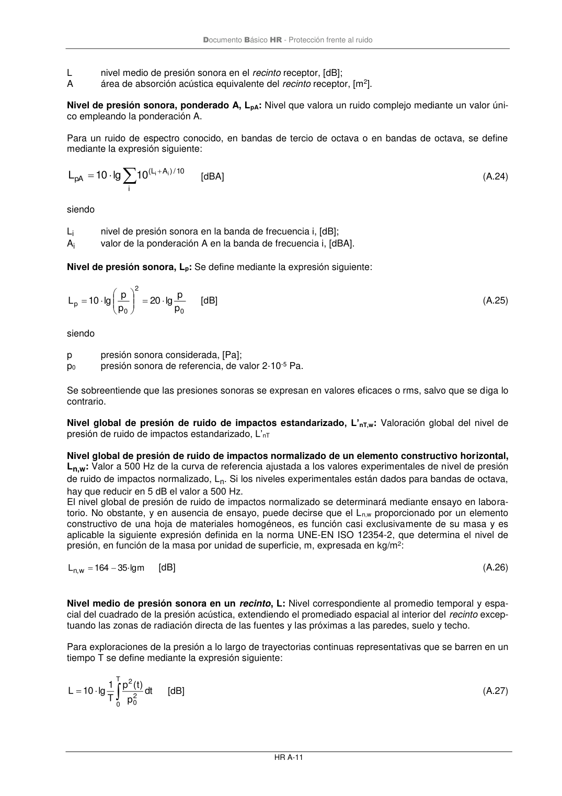

DB-HR Protección frente al ruido · edición 2019-12-20 · capa oficial
Documento DB-HR-oficial · SHA-256 del PDF a67baeca5138bb1f121f797d23a79a4557bd9ac4abacd954024893e05411eeab
Página física 53 de 80.
Copia fiel del PDF fuente · Fuente oficial
Ficha de la disposición en la fuente oficial
Formato: Texto de la página (Markdown)
Documento Básico HR - Protección frente al ruido
HR A-11
L
nivel medio de presión sonora en el recinto receptor, [dB];
A
área de absorción acústica equivalente del recinto receptor, [m2].
Nivel de presión sonora, ponderado A, LpA: Nivel que valora un ruido complejo mediante un valor úni-
co empleando la ponderación A.
Para un ruido de espectro conocido, en bandas de tercio de octava o en bandas de octava, se define
mediante la expresión siguiente:
+
=
i
10
/)
A
L
(
pA
i
i
10
lg
10
L
[dBA]
(A.24)
siendo
Li
nivel de presión sonora en la banda de frecuencia i, [dB];
Ai
valor de la ponderación A en la banda de frecuencia i, [dBA].
Nivel de presión sonora, Lp: Se define mediante la expresión siguiente:
0
2
0
p
p
p
lg
20
p
p
lg
10
L
=
=
[dB]
(A.25)
siendo
p
presión sonora considerada, [Pa];
p0
presión sonora de referencia, de valor 2·10-5 Pa.
Se sobreentiende que las presiones sonoras se expresan en valores eficaces o rms, salvo que se diga lo
contrario.
Nivel global de presión de ruido de impactos estandarizado, L’nT,w: Valoración global del nivel de
presión de ruido de impactos estandarizado, L’nT
Nivel global de presión de ruido de impactos normalizado de un elemento constructivo horizontal,
Ln,w: Valor a 500 Hz de la curva de referencia ajustada a los valores experimentales de nivel de presión
de ruido de impactos normalizado, Ln. Si los niveles experimentales están dados para bandas de octava,
hay que reducir en 5 dB el valor a 500 Hz.
El nivel global de presión de ruido de impactos normalizado se determinará mediante ensayo en labora-
torio. No obstante, y en ausencia de ensayo, puede decirse que el Ln,w proporcionado por un elemento
constructivo de una hoja de materiales homogéneos, es función casi exclusivamente de su masa y es
aplicable la siguiente expresión definida en la norma UNE-EN ISO 12354-2, que determina el nivel de
presión, en función de la masa por unidad de superficie, m, expresada en kg/m2:
m
·lg
35
164
L
w
,n
−
=
[dB]
(A.26)
Nivel medio de presión sonora en un recinto, L: Nivel correspondiente al promedio temporal y espa-
cial del cuadrado de la presión acústica, extendiendo el promediado espacial al interior del recinto excep-
tuando las zonas de radiación directa de las fuentes y las próximas a las paredes, suelo y techo.
Para exploraciones de la presión a lo largo de trayectorias continuas representativas que se barren en un
tiempo T se define mediante la expresión siguiente:
=
T
0
2
0
2
dt
p
)t(
p
T
1
lg
10
L
[dB]
(A.27)
